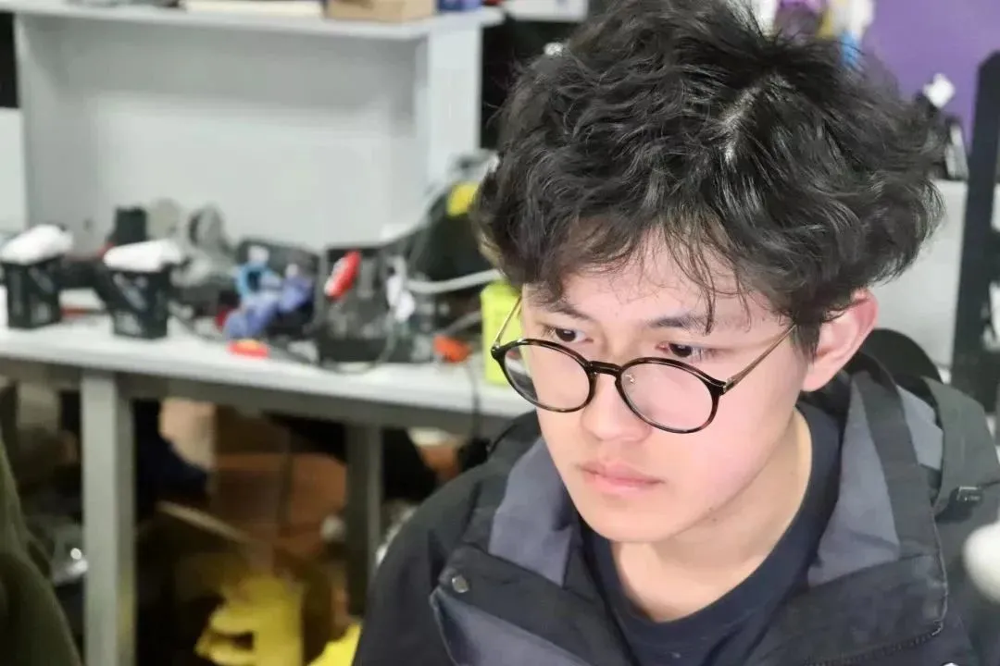
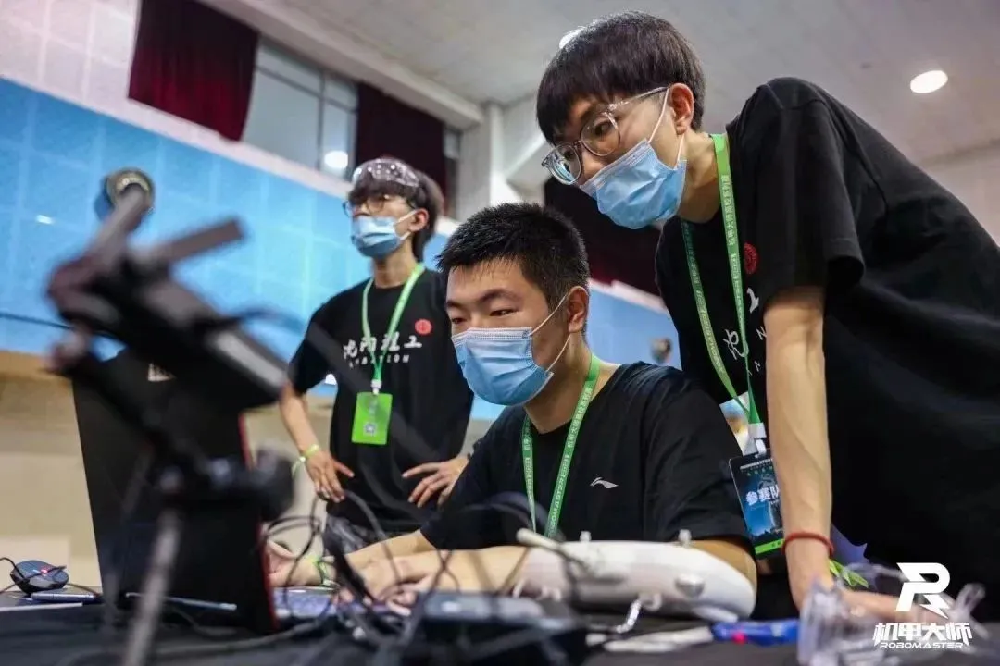

哨兵组专访
主要负责机械板块，使哨兵实现自动化，是整个团队的核心人物

辅助戴子龙学长使哨兵能自主动巡逻反击

哨兵机器人的主要任务是攻击和防守，以保护基地和队友。在己方前哨站被摧毁前，哨兵处于无敌状态。
2023年RoboMaster机甲大赛中的哨兵机器人相比于之前进行了系统性的升级，具备了自主导航和射击能力，配备了更加先进的感知和控制系统。
总之，哨兵机器人将扮演着重要的角色，随着机器人技术的不断发展，它们将变得更加智能化和精准化。

当你来到战队后你会发现每个人每时每刻都在努力，你很难不融入这个环境。成功的道路还很长，我们要沉淀沉淀再沉淀，希望大家都可以在更高的山峰上遇见更好的自己！
最后，为大家奉上哨兵组两位大神的亲密合照
希望这个赛季的哨兵机器人能够学会走路！
排版|烂好人
文案|烂好人
图片|沈理电协
审核|红鲤